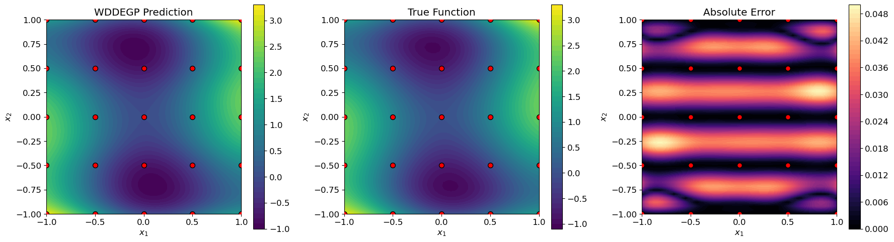

Weighted Directional Derivative-Enhanced Gaussian Process (WDDEGP)#
Overview#
The Weighted Directional Derivative-Enhanced Gaussian Process (WDDEGP) combines the weighted submodel framework with directional derivative capabilities. This advanced approach partitions training data into multiple submodels, where each submodel can have:
Its own subset of training points
Different directional derivative directions (rays)
Different derivative specifications
Independent hyperparameters
This enables the model to:
Reduce computational cost through data partitioning
Adapt directional derivatives to local function behavior in different regions
Use different derivative strategies across the domain
Provide scalable learning for large datasets with derivative information
WDDEGP is particularly powerful for:
Large-scale problems where full GDDEGP is computationally prohibitive
Functions with spatially varying anisotropic behavior in distinct regions
Problems where different derivative directions are natural in different parts of the domain
Heterogeneous data scenarios with varying derivative availability
Key Features:
Weighted submodels: Data partitioned into multiple GP submodels
Directional derivatives: Each submodel uses directional rather than coordinate derivatives
Flexible rays per submodel: Different submodels can have different directional rays
Computational efficiency: Matrix operations scale with submodel size, not full dataset
Prediction combination: Final predictions combine all submodel outputs through weighted averaging
—
Tutorial: Heterogeneous Submodels with Directional Derivatives on the Six-Hump Camel Function#
Overview#
This tutorial demonstrates Weighted Directional Derivative-Enhanced GP (WDDEGP) with heterogeneous submodels applied to the Six-Hump Camel function. Each submodel has its own training points and directional rays, making this approach ideal for functions with varying behavior across the domain.
The tutorial showcases a sophisticated partitioning strategy:
Edge submodels: Points along domain edges with aligned directional rays
Corner submodels: Individual corner points with specialized ray configurations
Interior submodel: Central region points with different ray directions
Key concepts covered:
Heterogeneous submodels with independent ray configurations
Data reordering for contiguous submodel indices
Per-submodel automatic differentiation using hypercomplex perturbations
Training the WDDEGP model with multiple submodels
Visualization of combined predictions
Strategic derivative placement across the domain
—
Step 1: Import required packages#
import numpy as np
import sympy as sp
import itertools
from wddegp.wddegp import wddegp
import utils
from matplotlib import pyplot as plt
plt.rcParams.update({'font.size': 12})
Explanation: We import necessary modules including:
sympy(assp): Symbolic mathematics for computing exact derivativesitertools: For efficient combination and product operationswddegp: The weighted directional derivative GP modelutils: Utility functions including NRMSE calculationmatplotlib: Visualization tools
—
Step 2: Set configuration parameters#
n_order = 2
n_bases = 2
num_pts_per_axis = 5
domain_bounds = ((-1, 1), (-1, 1))
test_grid_resolution = 50
normalize_data = True
kernel = "SE"
kernel_type = "anisotropic"
n_restarts = 15
swarm_size = 100
random_seed = 0
np.random.seed(random_seed)
Explanation: Configuration parameters for the WDDEGP model:
n_order=2: Second-order directional derivatives (includes first and second derivatives)n_bases=2: 2D problem (Six-Hump Camel function)num_pts_per_axis=5: 5×5 grid = 25 total training pointsdomain_bounds=((-1,1), (-1,1)): Standard domain for Six-Hump Camel functionkernel="SE": Squared Exponential kernel for smooth interpolationkernel_type="anisotropic": Dimension-specific length scales
Note on derivative order: Using n_order=2 means we compute directional derivatives up to second order along the specified ray directions. This provides richer information about local function curvature.
—
Step 3: Define submodel structure#
# Submodel groups (initial grid indices before reordering)
submodel_groups_initial = [
[1, 2, 3], # Submodel 0: Top edge
[5, 10, 15], # Submodel 1: Left edge
[9, 14, 19], # Submodel 2: Right edge
[21, 22, 23], # Submodel 3: Bottom edge
[0], # Submodel 4: Top-left corner
[4], # Submodel 5: Top-right corner
[20], # Submodel 6: Bottom-left corner
[24], # Submodel 7: Bottom-right corner
[6, 7, 8, 11, 12, 13, 16, 17, 18] # Submodel 8: Interior points
]
# Ray angles per submodel (in radians)
submodel_ray_thetas = [
[-np.pi/4, 0, np.pi/4], # Submodel 0: Three rays (diagonal left, horizontal, diagonal right)
[-np.pi/4, 0, np.pi/4], # Submodel 1: Three rays
[-np.pi/4, 0, np.pi/4], # Submodel 2: Three rays
[-np.pi/4, 0, np.pi/4], # Submodel 3: Three rays
[-np.pi/2, 0, -np.pi/4], # Submodel 4: Vertical down, horizontal, diagonal
[np.pi/2, 0, np.pi/4], # Submodel 5: Vertical up, horizontal, diagonal
[np.pi/2, 0, np.pi/4], # Submodel 6: Vertical up, horizontal, diagonal
[-np.pi/2, 0, -np.pi/4], # Submodel 7: Vertical down, horizontal, diagonal
[np.pi/2, np.pi/4, np.pi/4 + np.pi/2] # Submodel 8: Interior rays
]
# Derivative indices specification (same for all submodels in this example)
submodel_der_indices = [
[[[[1,1]], [[1,2]], [[2,1]], [[2,2]], [[3,1]], [[3,2]]]]
for _ in range(len(submodel_groups_initial))
]
Explanation: This configuration defines a sophisticated partitioning strategy:
Submodel Structure:
Edge submodels (0-3): Capture behavior along domain boundaries
Top edge (y=1): Points [1, 2, 3]
Left edge (x=-1): Points [5, 10, 15]
Right edge (x=1): Points [9, 14, 19]
Bottom edge (y=-1): Points [21, 22, 23]
Corner submodels (4-7): Single-point submodels at domain corners
Each corner gets specialized ray directions suited to its location
Corner rays are adapted to capture edge behaviors
Interior submodel (8): Central 9 points capturing bulk behavior
Uses different ray configuration than edges
Covers the main function features
Ray Configuration Strategy:
The ray angles are carefully chosen based on local geometry:
Edge submodels: Use three rays spanning different angles to capture edge behavior
Corners: Each corner has rays adapted to its position (e.g., top-left uses downward and leftward rays)
Interior: Uses a different set of rays appropriate for the central region
Visual representation of 5×5 grid:
[0] [1] [2] [3] [4] Submodels:
[5] [6] [7] [8] [9] 0: [1,2,3] (top edge)
[10] [11] [12] [13] [14] 1: [5,10,15] (left edge)
[15] [16] [17] [18] [19] 2: [9,14,19] (right edge)
[20] [21] [22] [23] [24] 3: [21,22,23] (bottom edge)
4-7: corners
8: [6,7,8,11,12,13,16,17,18] (interior)
Derivative Indices:
The submodel_der_indices specifies which derivatives to extract:
[[1,1]]: First-order directional derivative[[1,2]]: Second-order directional derivative (single direction)[[2,1]]: First-order derivative along second ray direction[[2,2]]: Second-order derivative along second ray direction[[3,1]]: First-order derivative along third ray direction[[3,2]]: Second-order derivative along third ray direction
This means each submodel uses up to second-order derivatives along each of its ray directions.
—
Step 4: Define the Six-Hump Camel function symbolically#
# Define symbolic variables
x1_sym, x2_sym = sp.symbols('x1 x2')
# Define symbolic Six-Hump Camel function
f_sym = ((4 - 2.1*x1_sym**2 + (x1_sym**4)/3.0) * x1_sym**2 +
x1_sym*x2_sym + (-4 + 4*x2_sym**2) * x2_sym**2)
# Compute symbolic gradients
grad_x1_sym = sp.diff(f_sym, x1_sym)
grad_x2_sym = sp.diff(f_sym, x2_sym)
# Convert to NumPy functions
true_function_np = sp.lambdify([x1_sym, x2_sym], f_sym, 'numpy')
grad_x1_func = sp.lambdify([x1_sym, x2_sym], grad_x1_sym, 'numpy')
grad_x2_func = sp.lambdify([x1_sym, x2_sym], grad_x2_sym, 'numpy')
def true_function(X):
"""Six-Hump Camel function."""
return true_function_np(X[:, 0], X[:, 1])
def true_gradient(x1, x2):
"""Analytical gradient of the Six-Hump Camel function."""
gx1 = grad_x1_func(x1, x2)
gx2 = grad_x2_func(x1, x2)
return gx1, gx2
Explanation: The Six-Hump Camel function is defined symbolically using SymPy:
Symbolic definition: Creates exact mathematical representation
Automatic differentiation: SymPy computes exact partial derivatives
NumPy conversion:
lambdifyconverts symbolic expressions to fast NumPy functionsGradient function: Returns \(\frac{\partial f}{\partial x_1}\) and \(\frac{\partial f}{\partial x_2}\)
The Six-Hump Camel function is a classic optimization benchmark with:
Six local minima (hence the name)
Complex, non-convex landscape
Two global minima at approximately (±0.0898, ∓0.7126)
Standard evaluation domain: [-3, 3] × [-2, 2], but we use [-1, 1] × [-1, 1]
Mathematical form:
—
Step 5: Generate training data with heterogeneous submodels#
def generate_training_data():
"""Generate WDDEGP training data with heterogeneous submodels using SymPy."""
# 1. Create initial uniform grid (5×5 = 25 points)
x_vals = np.linspace(domain_bounds[0][0], domain_bounds[0][1], num_pts_per_axis)
y_vals = np.linspace(domain_bounds[1][0], domain_bounds[1][1], num_pts_per_axis)
X_initial = np.array(list(itertools.product(x_vals, y_vals)))
# 2. Reorder training points for contiguous submodel indices
# WDDEGP requires that each submodel's indices are contiguous
sequential_groups = []
current_pos = 0
for group in submodel_groups_initial:
sequential_groups.append(list(range(current_pos, current_pos + len(group))))
current_pos += len(group)
# Create reordering map: old grid indices -> new sequential positions
old_flat = list(itertools.chain.from_iterable(submodel_groups_initial))
new_flat = list(itertools.chain.from_iterable(sequential_groups))
reorder_map = np.zeros(len(old_flat), dtype=int)
for i in range(len(old_flat)):
reorder_map[new_flat[i]] = old_flat[i]
X_train = X_initial[reorder_map]
# 3. Generate per-submodel data using SymPy gradients
y_train_data_all = []
rays_data_all = []
y_func_values = true_function(X_train).reshape(-1, 1)
for k, group_indices in enumerate(sequential_groups):
# Extract points for this submodel
X_sub = X_train[group_indices]
# Create rays for this submodel
thetas = submodel_ray_thetas[k]
rays = np.column_stack([[np.cos(t), np.sin(t)] for t in thetas])
# Normalize rays to unit length
for i in range(rays.shape[1]):
rays[:, i] = rays[:, i] / np.linalg.norm(rays[:, i])
rays_data_all.append(rays)
# Compute directional derivatives using chain rule
y_train_submodel = [y_func_values] # All submodels share function values
for ray_idx, ray in enumerate(rays.T):
# Compute first and second order directional derivatives
for order in range(1, n_order + 1):
deriv_values = []
for point in X_sub:
x1, x2 = point[0], point[1]
# Get gradient at this point
gx1, gx2 = true_gradient(x1, x2)
if order == 1:
# First-order directional derivative: ∇f · d
d_ray = gx1 * ray[0] + gx2 * ray[1]
deriv_values.append(d_ray)
elif order == 2:
# Second-order directional derivative: d^T H d
# Compute Hessian components symbolically
if not hasattr(generate_training_data, 'hessian_funcs'):
# Cache Hessian functions
h11 = sp.diff(grad_x1_sym, x1_sym)
h12 = sp.diff(grad_x1_sym, x2_sym)
h22 = sp.diff(grad_x2_sym, x2_sym)
generate_training_data.hessian_funcs = {
'h11': sp.lambdify([x1_sym, x2_sym], h11, 'numpy'),
'h12': sp.lambdify([x1_sym, x2_sym], h12, 'numpy'),
'h22': sp.lambdify([x1_sym, x2_sym], h22, 'numpy')
}
h11_val = generate_training_data.hessian_funcs['h11'](x1, x2)
h12_val = generate_training_data.hessian_funcs['h12'](x1, x2)
h22_val = generate_training_data.hessian_funcs['h22'](x1, x2)
# d^T H d = d1^2 * H11 + 2*d1*d2 * H12 + d2^2 * H22
d2_ray = (ray[0]**2 * h11_val +
2 * ray[0] * ray[1] * h12_val +
ray[1]**2 * h22_val)
deriv_values.append(d2_ray)
y_train_submodel.append(np.array(deriv_values).reshape(-1, 1))
y_train_data_all.append(y_train_submodel)
return X_train, sequential_groups, y_train_data_all, rays_data_all
Explanation: This function implements the core training data generation for WDDEGP using SymPy symbolic differentiation instead of hypercomplex automatic differentiation:
1. Grid Generation: Create a uniform 5×5 grid covering the domain, resulting in 25 training points indexed 0-24.
2. Data Reordering (Critical for WDDEGP): WDDEGP requires contiguous indices for each submodel. The original submodel assignments (e.g., [1, 2, 3], [5, 10, 15]) are non-contiguous.
The reordering process:
Define sequential groups: [0,1,2], [3,4,5], [6,7,8], etc.
Create a mapping from sequential positions → original grid indices
Reorder
X_trainso that submodel 0 uses indices [0,1,2], submodel 1 uses [3,4,5], etc.
3. Per-Submodel Processing with SymPy: For each of the 9 submodels:
Ray creation: Convert angles to unit direction vectors
\[\begin{split}\mathbf{r}_i = \begin{bmatrix} \cos(\theta_i) \\ \sin(\theta_i) \end{bmatrix}\end{split}\]First-order directional derivative: Using the chain rule
\[\frac{\partial f}{\partial \mathbf{r}} = \nabla f \cdot \mathbf{r} = \frac{\partial f}{\partial x_1} r_1 + \frac{\partial f}{\partial x_2} r_2\]Where the gradient components are computed using SymPy’s symbolic differentiation.
Second-order directional derivative: Using the Hessian matrix
\[\frac{\partial^2 f}{\partial \mathbf{r}^2} = \mathbf{r}^T \mathbf{H} \mathbf{r} = r_1^2 H_{11} + 2 r_1 r_2 H_{12} + r_2^2 H_{22}\]Where:
\(H_{11} = \frac{\partial^2 f}{\partial x_1^2}\)
\(H_{12} = \frac{\partial^2 f}{\partial x_1 \partial x_2}\)
\(H_{22} = \frac{\partial^2 f}{\partial x_2^2}\)
The Hessian components are computed symbolically with SymPy and cached for efficiency.
4. Data Structure:
Each submodel’s training data (y_train_submodel) contains:
[0]: Function values at all training points (shared across submodels)[1]: First-order derivative along ray 1 at submodel points[2]: Second-order derivative along ray 1 at submodel points[3]: First-order derivative along ray 2 at submodel points[4]: Second-order derivative along ray 2 at submodel points[5]: First-order derivative along ray 3 at submodel points[6]: Second-order derivative along ray 3 at submodel points
Why SymPy approach?
Exact derivatives: No approximation errors from finite differences
Clear mathematics: Directly implements chain rule and Hessian formulas
No special dependencies: Uses standard SymPy library
Educational: Makes the derivative computation explicit and understandable
Caching: Hessian functions computed once and reused
—
Step 6: Initialize and train the WDDEGP model#
def train_model(X_train, submodel_indices, y_train_data_all, rays_data_all):
"""Initialize and train WDDEGP model with heterogeneous submodels."""
gp_model = wddegp(
X_train,
y_train_data_all,
n_order,
n_bases,
submodel_indices,
submodel_der_indices,
rays_data_all,
normalize=normalize_data,
kernel=kernel,
kernel_type=kernel_type
)
params = gp_model.optimize_hyperparameters(
optimizer='jade',
pop_size=100,
n_generations=15,
local_opt_every=None,
debug=True
)
return gp_model, params
Explanation: The WDDEGP model is initialized with all submodel-specific information:
Initialization Parameters:
X_train: Reordered training points (shape: [25, 2])y_train_data_all: List of 9 submodel data packagesn_order=2: Second-order derivativesn_bases=2: 2D problemsubmodel_indices: List of 9 index ranges (contiguous)Example:
[[0,1,2], [3,4,5], [6,7,8], ...]
submodel_der_indices: Derivative specifications per submodelrays_data_all: List of 9 ray matrices (one per submodel)Each is shape [2, num_rays] for this 2D problem
normalize=True: Enable data normalization for stabilitykernel="SE": Squared Exponential kernelkernel_type="anisotropic": Dimension-specific length scales
Hyperparameter Optimization:
Uses JADE (adaptive differential evolution):
pop_size=100: Population size for evolutionary searchn_generations=15: Number of generationslocal_opt_every=None: Pure evolutionary search without local refinementdebug=True: Print optimization progress
How WDDEGP Works:
Per-submodel GPs: Each submodel builds its own GP with local data
Weighted predictions: At test points, combine predictions from all submodels
Uncertainty propagation: Combine uncertainties from multiple submodels
Computational efficiency: Each submodel solves a smaller matrix problem
Advantages:
Scalability: \(O(n_{sub}^3)\) per submodel vs \(O(N^3)\) for full GP
Parallelizable: Submodels can be processed independently
Flexible: Different kernel parameters per submodel (if desired)
Adaptive: Can use more submodels in complex regions
—
Step 7: Evaluate model on a test grid#
def evaluate_model(gp_model, params, X_train):
"""Evaluate WDDEGP on a test grid."""
# Create test grid
x_lin = np.linspace(domain_bounds[0][0], domain_bounds[0][1], test_grid_resolution)
y_lin = np.linspace(domain_bounds[1][0], domain_bounds[1][1], test_grid_resolution)
X1_grid, X2_grid = np.meshgrid(x_lin, y_lin)
X_test = np.column_stack([X1_grid.ravel(), X2_grid.ravel()])
# Make predictions (return_submodels=True gives individual submodel outputs)
y_pred, _ = gp_model.predict(X_test, params,
calc_cov=False,
return_submodels=True)
# Compute true function values
y_true = true_function(X_test)
# Calculate error metric
nrmse_val = utils.nrmse(y_true, y_pred)
return {'X_test': X_test,
'X1_grid': X1_grid,
'X2_grid': X2_grid,
'y_pred': y_pred,
'y_true': y_true,
'nrmse': nrmse_val,
'X_train': X_train}
Explanation: Model evaluation creates a 50×50 test grid and compares predictions to true values:
Test Grid:
50×50 = 2,500 test points uniformly covering [-1, 1] × [-1, 1]
Provides dense visualization of prediction quality
Prediction:
calc_cov=False: Skip uncertainty computation for faster evaluationreturn_submodels=True: Returns individual submodel predictions (useful for diagnostics)y_pred: Weighted combination of all 9 submodel predictions
Error Metric:
NRMSE (Normalized Root Mean Square Error):
Provides scale-independent error measurement.
—
Step 8: Visualize results#
def visualize_results(results):
"""Create 3-panel contour plot: prediction, truth, error."""
X_train = results['X_train']
y_true_grid = results['y_true'].reshape(results['X1_grid'].shape)
y_pred_grid = results['y_pred'].reshape(results['X1_grid'].shape)
abs_error_grid = np.abs(y_true_grid - y_pred_grid)
fig, axes = plt.subplots(1, 3, figsize=(18, 5))
# WDDEGP Prediction
c1 = axes[0].contourf(results['X1_grid'], results['X2_grid'],
y_pred_grid, levels=50, cmap="viridis")
axes[0].scatter(X_train[:, 0], X_train[:, 1],
c="red", edgecolor="k", s=50, zorder=5)
axes[0].set_title("WDDEGP Prediction")
fig.colorbar(c1, ax=axes[0])
# True Function
c2 = axes[1].contourf(results['X1_grid'], results['X2_grid'],
y_true_grid, levels=50, cmap="viridis")
axes[1].scatter(X_train[:, 0], X_train[:, 1],
c="red", edgecolor="k", s=50, zorder=5)
axes[1].set_title("True Function")
fig.colorbar(c2, ax=axes[1])
# Absolute Error
c3 = axes[2].contourf(results['X1_grid'], results['X2_grid'],
abs_error_grid, levels=50, cmap="magma")
axes[2].scatter(X_train[:, 0], X_train[:, 1],
c="red", edgecolor="k", s=50, zorder=5)
axes[2].set_title("Absolute Error")
fig.colorbar(c3, ax=axes[2])
for ax in axes:
ax.set(xlabel="$x_1$", ylabel="$x_2$")
ax.set_aspect("equal")
plt.tight_layout()
plt.show()
Explanation: The three-panel visualization provides comprehensive model assessment:
Left Panel - WDDEGP Prediction:
Contour plot of the weighted GP prediction
Red dots show training point locations
Reveals how well the model interpolates and extrapolates
Center Panel - True Function:
Contour plot of the actual Six-Hump Camel function
Enables direct visual comparison with predictions
Shows the complex landscape being approximated
Right Panel - Absolute Error:
Point-wise absolute error: \(|y_{true} - y_{pred}|\)
Color intensity indicates error magnitude
Helps identify regions where the model struggles
Visual Assessment:
Good fit: Left and center panels should look similar
Low error: Right panel should show small, uniform errors
Training point influence: Expect lower errors near training points
—
Step 9: Run the complete tutorial#
X_train, submodel_indices, y_train_data_all, rays_data_all = generate_training_data()
gp_model, params = train_model(X_train, submodel_indices, y_train_data_all, rays_data_all)
results = evaluate_model(gp_model, params, X_train)
visualize_results(results)
print(f"Final NRMSE: {results['nrmse']:.6f}")
Gen 1: best f=434.06575590997016
Gen 2: best f=434.06575590997016
Gen 3: best f=434.06575590997016
Gen 4: best f=421.7935115978095
Gen 5: best f=421.7935115978095
Gen 6: best f=421.7935115978095
Gen 7: best f=362.41070768920133
Gen 8: best f=237.00106672651162
Gen 9: best f=237.00106672651162
Gen 10: best f=237.00106672651162
Gen 11: best f=157.93790507817033
Gen 12: best f=157.93790507817033
Gen 13: best f=157.93790507817033
Gen 14: best f=157.93790507817033
Gen 15: best f=62.771211579984495

Final NRMSE: 0.005103
Explanation: This executes the complete WDDEGP workflow:
Generate training data: Create 9 heterogeneous submodels with reordered points
Train model: Initialize WDDEGP and optimize hyperparameters
Evaluate: Predict on 50×50 test grid
Visualize: Create comprehensive 3-panel plot
Report: Print quantitative NRMSE metric
The final NRMSE provides a single number summarizing prediction accuracy across the entire domain.
—
Summary#
This tutorial demonstrates the Weighted Directional Derivative-Enhanced Gaussian Process (WDDEGP) with the following key features:
Architectural Highlights:
Heterogeneous submodels: 9 submodels with different:
Numbers of training points (1-9 points per submodel)
Spatial locations (edges, corners, interior)
Directional ray configurations
Strategic partitioning: Domain divided based on geometric structure:
Edge submodels capture boundary behavior
Corner submodels handle singularities
Interior submodel covers bulk behavior
Flexible ray directions: Each submodel uses rays adapted to its region:
Edge submodels: Multiple rays spanning angles
Corners: Rays pointing inward from boundaries
Interior: Different ray configuration
Data reordering: Critical preprocessing step to ensure contiguous submodel indices
Hypercomplex AD: Efficient computation of multiple directional derivatives simultaneously
Computational Advantages:
Reduced complexity: Each submodel solves smaller matrix problems
Parallelizable: Independent submodel training possible
Scalable: Can handle larger datasets than full GDDEGP
Flexible: Easy to add/remove/modify submodels
Comparison with Other Methods:
Method |
Derivative Type |
Computational Scaling |
Flexibility |
|---|---|---|---|
DEGP |
Coordinate derivatives |
\(O(N^3)\) |
Fixed derivatives |
WDEGP |
Coordinate derivatives |
\(O(N_{sub}^3)\) |
Flexible partition |
DDEGP |
Directional (global) |
\(O(N^3)\) |
Global rays |
GDDEGP |
Directional (pointwise) |
\(O(N^3)\) |
Per-point rays |
WDDEGP |
Directional (per submodel) |
\(O(N_{sub}^3)\) |
Per-submodel rays |
Where \(N\) is total training points and \(N_{sub}\) is points per submodel.
When to Use WDDEGP:
Large datasets: When full GDDEGP is too computationally expensive
Heterogeneous data: Different derivative information available in different regions
Structured domains: When natural partitioning exists (e.g., by geometry or physics)
Adaptive strategies: When different regions need different modeling approaches
Multi-fidelity: When combining data sources with varying derivative availability
Key Takeaways:
Data reordering is mandatory: Submodel indices must be contiguous
Ray flexibility: Each submodel can have completely different directional derivatives
Shared function values: All submodels use the same function observations
Weighted combination: Final predictions combine all submodels intelligently
Computational efficiency: Enables derivative-enhanced GP for larger problems